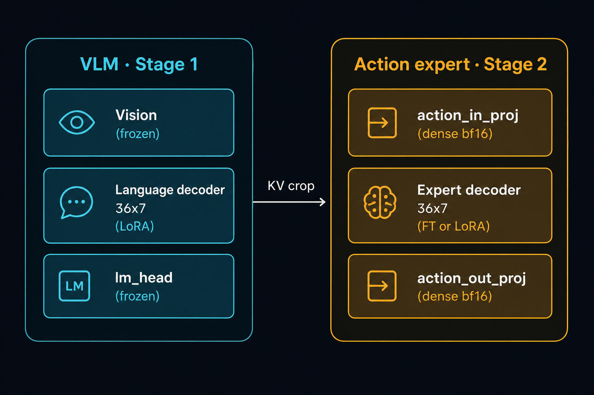
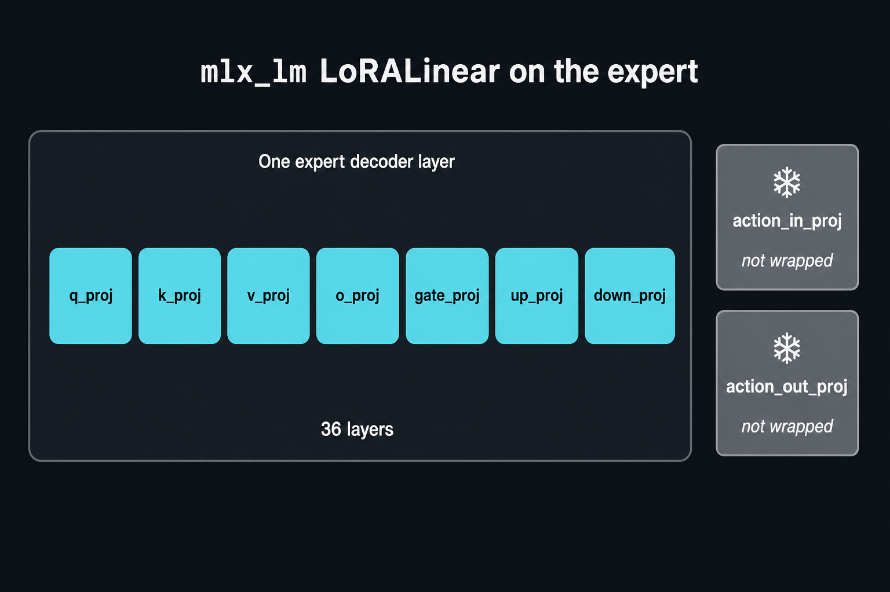
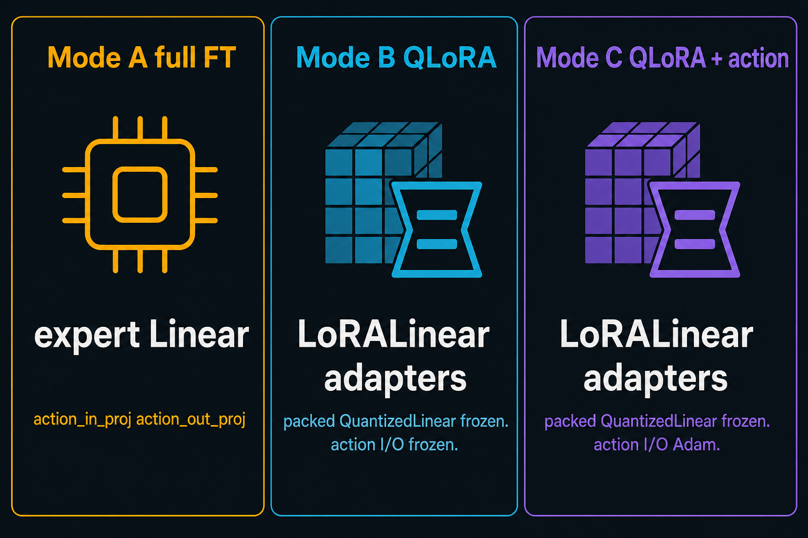

Sequential SFT. Stage 1 updates VLM adapters. Stage 2 freezes them and updates the action expert.
Packed QuantizedLinear.weight never Adam-steps.
--expert-update + all4.--expert-lora. Not a 2.3B FT.LoRALinear on the language decoder

--expert-lora replaces the expert’s 36×7
q/k/v/o/gate/up/down with mlx_lm LoRALinear
(rank 8, scale 20). That is QLoRA: packed
QuantizedLinear stays frozen; only the
LoRALinear adapters train.
action_in_proj / action_out_proj are never wrapped.

| A · full FT | B · QLoRA | C · QLoRA + action | |
|---|---|---|---|
| Flag | (default) / --expert-update --expert-bf16 | --expert-lora | --expert-lora --train-action-proj |
| Expert decoder | Adam Linear · bf16 |
packed QuantizedLinear |
packed QuantizedLinear |
LoRALinear adapters |
none | train 252 leaves | train 252 leaves |
| action I/O | Adam | frozen | Adam · 15 arrays |
| Metal | 32 GB | 12 GB | 12 GB |
.venv/bin/python -m mlx_port.scripts.sft_stage1_small --n-clips 8 --steps 10 --seed 0 --quantize-all .venv/bin/python -m mlx_port.scripts.sft_stage2_small --n-clips 8 --steps 10 --seed 0 --quantize-all .venv/bin/python -m mlx_port.scripts.sft_stage2_small --expert-lora --n-clips 8 --steps 10 --seed 0 .venv/bin/python -m mlx_port.scripts.sft_stage2_small --expert-lora --train-action-proj \ --expert-lora-save-dir mlx_port/reports/qlora/sft_stage2_small_dense --n-clips 8 --steps 10 --seed 0
# one-step timer --stage stage1 --lora --lora-vision none --quantize-all --stage stage2 --expert-update --quantize-all --expert-bf16 --stage stage2 --expert-lora --quantize-all --stage stage2 --expert-lora --train-action-proj --quantize-all